The R-factor: how rich the sulphide gets
The measures how much silicate magma has equilibrated with a given amount of segregated sulphide melt. A large R-factor means only a little sulphide melt has met a lot of magma, so that little sulphide has scavenged a large concentration of nickel, copper and PGE. A small R-factor means lots of sulphide melt, each part of it holding only a small concentration. slide 1
So for magmatic nickel sulphide deposits you want a large R-factor: all the available nickel and copper partitioned into a small volume of sulphide. For nickel laterites you want the opposite, a small R-factor, with the nickel left in the silicate (in olivine), which weathering later concentrates. slide 2 lecture recording, 29 Sep
The starting magma matters too: basalts carry about 100 to 500 ppm Ni, ultramafic magmas about 2000 to 4000 ppm. Run the mixer at the top with both. slide 19
Mafic intrusion-hosted deposits
Sudbury, Norilsk, Voisey’s Bay and Jinchuan are intrusion-hosted. Ore sits in lenticular irregularities at the lower gabbro-wall rock contact (the contaminated zones), in stratiform zones within layered gabbro, and in irregular offshoots and vein swarms into the intruded rocks. It is zoned: a lower zone of massive and brecciated sulphide (over 70% sulphide), overlain by network sulphide (40 to 70%) and then disseminated sulphide (15 to 40%). The sulphide is about 70% pyrrhotite, 15% pentlandite and 15% chalcopyrite. slide 3
In massive ore, coarse pentlandite forms patches and veins in pyrrhotite, consistent with cooling from an originally homogeneous Fe-Ni-S liquid. Disseminated ore is trapped droplets of that liquid. Metamorphism has barely touched these deposits, but local hydrothermal reworking happens, especially of PGE along faults. Where an arsenic-rich granite intrudes, platinum combines with the arsenic, giving secondary zones of platinum arsenide (sperrylite). slide 3 lecture recording, 29 Sep
These systems tap the mantle through deep structures in thick crust. Magma rises through deep, mid-crustal and shallow chambers, sills and dykes, and on the way it is contaminated by crustal rocks: silica, sulphur and Fe³⁺, plus carbon from coal or sulphate from evaporites. That triggers early sulphide saturation. Gabbroic variants have high Cu/Ni (Sudbury, Norilsk), ultrabasic ones low, and further fractionation of the sulphide liquid itself pushes Cu/Ni higher further from the main ore. slide 4 lecture recording, 29 Sep
How deep has erosion cut?
What does each contaminant do?0 / 4
Sudbury: ore from an impact
Sudbury, in Canada, is an unusual mafic body in a deformed basin shape, and the best explanation is a meteorite impact. The impact struck a region already being pulled apart, so the fractures went all the way down to the mantle, and mantle melt rose up through them. The Sudbury Igneous Complex (SIC) is the result: norite at the base with sulphides disseminated through it and in massive lenses, a contaminated sublayer at its margin, granophyre (a fine-grained granitic rock) on top, and the Onaping tuffs, a fallback breccia of impact debris, overlying it all. There isn’t one deposit but many, all around the rim. slides 5 and 6 lecture recording, 29 Sep
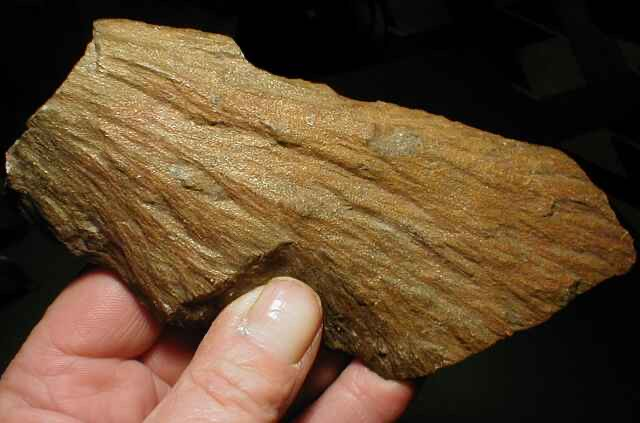
The striations fan across the surface. What kind of structure is this, and what does it tell you about Sudbury?
Show the reasoning
This looks like a shatter cone: striated, cone-shaped fracture surfaces made by the shock wave of a high-velocity impact. The beautiful shatter cones around Sudbury are part of the evidence that the basin is an impact structure. Ordinary igneous or tectonic processes don’t make them.
Build the Sudbury Igneous Complexstep 1 of 5
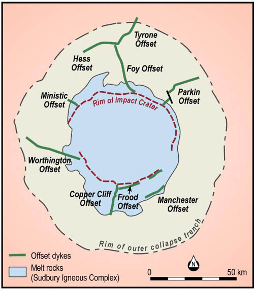
Norilsk, Jinchuan and Monchegorsk
Norilsk-Talnakh, in northern Siberia, belongs to the Permian-Triassic Siberian flood basalts. Huge lithospheric faults let magma through to sills like the Talnakh intrusion, which carries the biggest deposits, with the lavas above them. The ore field is about 100 by 50 km, with more deposits beyond it: they will be mining and exploring there for generations. Massive sulphide sits at the base of the intrusions and into the footwall; disseminated sulphide in taxitic (irregular, mish-mash textured) gabbro-dolerite. The key ingredient is contamination: the sills intruded evaporites, whose sulphate supplied sulphur, plus silica and Fe³⁺ from the country rocks. Because the whole system is preserved, it can be mined to great depth. slides 11 to 13 lecture recording, 29 Sep
Jinchuan, on the southern margin of the Sino-Korean craton in a Proterozoic incipient oceanic rift, isn’t one intrusion but a series of pipe-like ultramafic bodies, with ore at their bases, and supplies most of China’s nickel. slide 14 lecture recording, 29 Sep
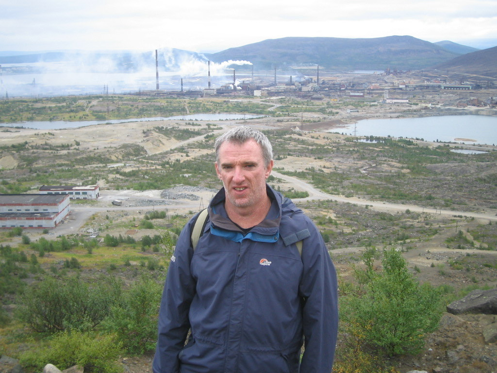
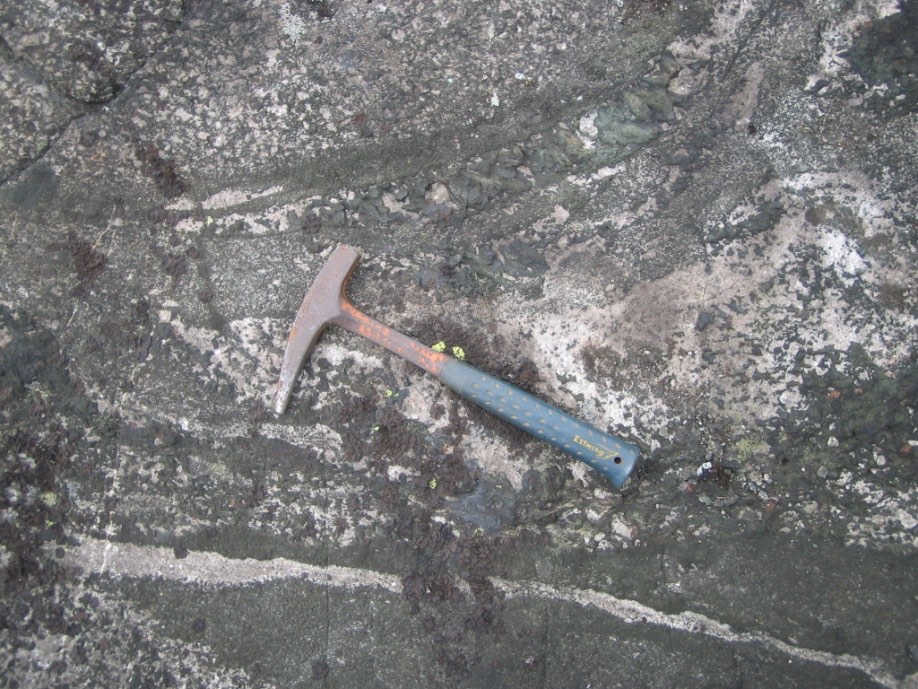
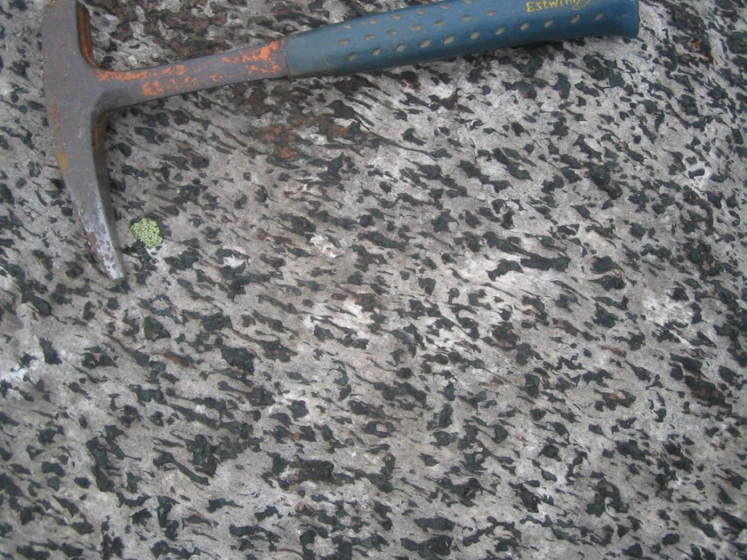
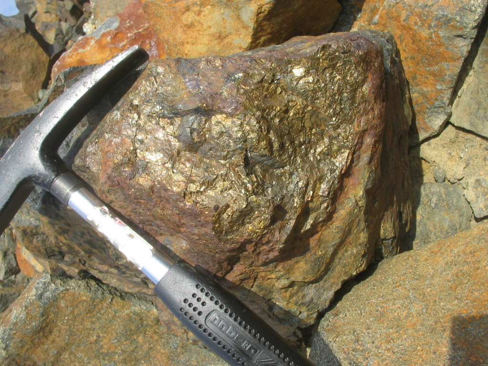
In A, a geologist stands above a town where nickel has been smelted since the 1930s. In C the dark crystals stand out from a pale surface. Why, and what is D?
Show the reasoning
Decades of smelting have made Monchegorsk badly polluted: little vegetation, sulphuric acid in the air, and a freshwater lake about 50 km away with a pH of 3. The upside for a geologist is perfect outcrop, because nothing grows on it. In C, acid has dissolved the plagioclase along grain boundaries, so the resistant orthopyroxene crystals of the gabbronorite stand proud. D is massive sulphide ore, mainly pyrrhotite with pentlandite and chalcopyrite.
The genetic model and the economics
Ni sulphide deposits are magmatic: they crystallise directly from a silicate melt with no hydrothermal stage. The silicate melt becomes saturated in sulphur, and immiscible sulphide droplets form, when its temperature drops, when silica rises (contamination by silica-rich crust) or when sulphur rises (contamination by crustal sulphur). How much Ni, Cu and PGE the droplets get depends on the magma’s starting metal content, the partition coefficient between the two melts, and the proportion of sulphide to silicate and how well they mix (the R-factor). The droplets segregate to the base of the conduit or chamber because sulphide liquid (SG about 4.4) is far denser than silicate liquid (about 3.3), helped by flow separation. Then the sulphide liquid crystallises, and can fractionate into Cu-rich and Ni-rich parts. slides 18 and 19 lecture recording, 29 Sep
Put the ore-forming steps in order0 / 5
Tap the steps in the order they happen.
Mineralogy drives the economics. Late exsolution of pentlandite from pyrrhotite helps processing, because it makes coarser pentlandite. Metamorphism can partly replace iron sulphides by magnetite in matrix ores. Deep oxidation replaces pyrrhotite and pentlandite with (Ni₂FeS₄). Fluids carrying As and CO₂ come in along faults and shears. In the mine, complex shapes, especially in extrusive deposits, mean high costs to define and extract ore, and pyrrhotite must be managed because it oxidises so fast in waste piles. slide 17 lecture recording, 29 Sep
- Intrusion-hosted zoning: massive and brecciated (over 70% sulphide), network (40 to 70%), disseminated (15 to 40%).
- Sulphide is about 70% pyrrhotite, 15% pentlandite, 15% chalcopyrite.
- Sulphide liquid SG about 4.4 vs silicate liquid about 3.3.
- Starting Ni: basalt 100 to 500 ppm; ultramafic 2000 to 4000 ppm.
Platinum group elements
The six PGEs split into two groups that behave differently. The PPGE (platinum, palladium, rhodium) partition strongly into sulphide. The IPGE (iridium, osmium, ruthenium) tend to stay behind in the host rock. Platinum matters well beyond jewellery: much of it goes into catalysts and engines. South Africa produces about five times as much platinum as anyone else, which is why the world kept buying from it even during apartheid; Russia leads palladium, almost all from Norilsk. slides 20 to 22 lecture recording, 29 Sep
Primary PGE deposits come in several styles: orthomagmatic, from magma mixing in layered intrusions (the Bushveld’s UG2, Merensky Reef and Platreef; the J-M Reef of Stillwater; the Great Dyke of Zimbabwe); contamination-related, as by-products (Norilsk, Sudbury, Kambalda, Thompson); and a rare deuteric style, the hortonolite pipes of the Bushveld (Onverwacht, Mooihoek, Driekop), iron-rich olivine pipes that were the first hard-rock platinum ever mined, in the early 1900s. slide 23 lecture recording, 29 Sep
The main primary PGE depositstap 3
Data from slide 24; contained PGE = tonnes × grade, worked out here.
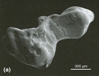
The Bushveld Complex
The Bushveld, north of Johannesburg, is a huge layered intrusion about 400 km across, in western, far western, eastern and northern limbs. Its Merensky Reef and UG2 chromitite are the world’s major source of platinum and rhodium, and it also holds world-class magnetite, chromite, vanadium, titanium and phosphorus deposits, while its later granites supply South Africa’s tin. Heavy elements, sulphide droplets and oxide minerals settled out during its early cooling. It intruded the carbonate-rich Transvaal Supergroup, a source of contamination. slides 25 and 26 lecture recording, 29 Sep
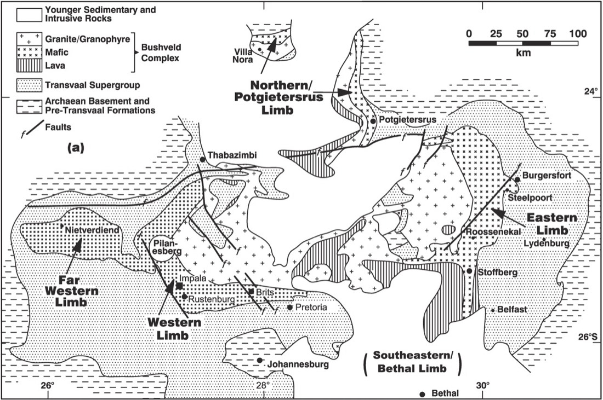
The intrusion is layered from a lower zone, through the critical zone (with the LG6 and UG2 chromitites and the Merensky Reef near its top), into the main zone, about 2 km of near-identical gabbronorite (in drill core it is the same rock for 2 km), then the upper zone and a roof of granophyre and felsite. The reefs are only a few metres thick but run consistently for over 200 km. Each fresh batch of magma deposits dense chromite at the base and lets plagioclase float to form anorthosite above: hence the rhythmic layering. A hot new batch can thermally erode the layer below, making the dips called potholes in the Merensky Reef. slides 27 and 28 lecture recording, 29 Sep
Build a layered intrusion0 batches
Inject a batch of magma and watch what settles and what floats.
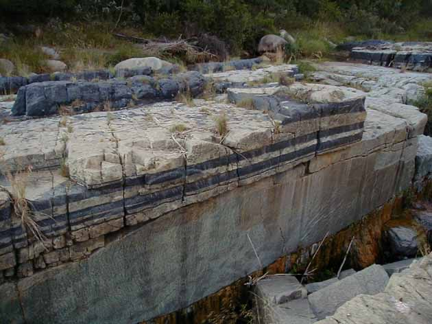
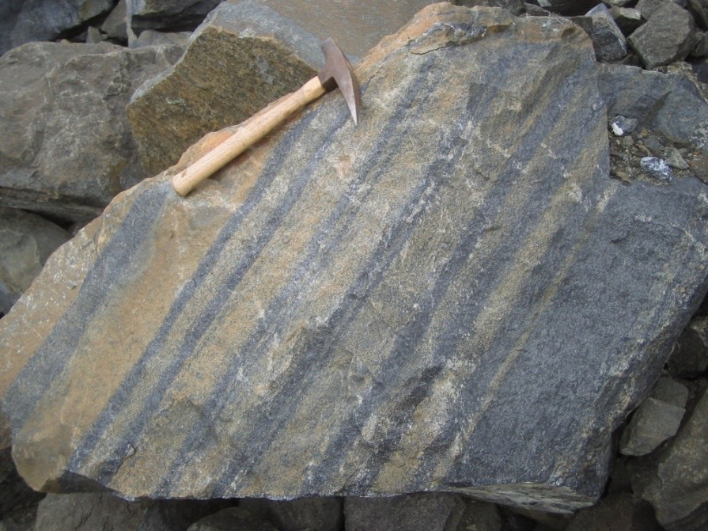
Name the black and the white layers in A, and explain why they alternate.
Show the reasoning
Black is chromitite, white is anorthosite. Each new batch of magma crystallised chromite, which sank, and plagioclase, which floated: a chromitite layer, then anorthosite, then the next batch. It looks like sedimentary bedding, and the process is just as physical. B is layered chromitite at Sopche, more like a layered intrusion than a pod.
Chromium, vanadium and titanium
Chromium is in chromite, whose chemistry is complex. Vanadium and titanium are locked in magnetite and ilmenite. Economic V and Ti deposits are mostly distinct oxide-rich layers, up to several metres thick, in large layered mafic-ultramafic intrusions; titanium also comes from mineral sands, and vanadium from some sedimentary uranium deposits. The oxide layers need an oxidising magma, the opposite of the reduced conditions for sulphides. Metallurgical-grade chromium comes from podiform chromitites in the upper mantle part of ophiolites; the Bushveld’s layered chromitites give chemical-grade chromium. slide 29 lecture recording, 29 Sep
Making an economic oxide deposit takes a chain of conditions: a high initial concentration (or constant replenishment) of Cr, Ti and V; early crystallisation of chromite, magnetite and ilmenite; a way to concentrate them (gravity settling, segregation, or crystals rolling down a tilted chamber floor); stable temperature, pressure and oxidation state long enough to build thick layers; a way to remove the lighter minerals, such as floating plagioclase; and preservation. slide 40 lecture recording, 29 Sep
Who produces what
USGS figures from slides 21, 22 and 31 to 35, latest year shown, with the earliest year as a faint bar. Units as on the slides; USGS reports ilmenite and rutile in thousand tonnes and vanadium in tonnes.
Podiform chromitites
Podiform chromitites sit in the upper mantle, generally near the crust-mantle boundary of oceanic lithosphere, which is why you find them only in ophiolites. Like everything else in this lecture they are conduits. A basaltic magma flows through a channel in harzburgite and reacts with it, leaving a rim of dunite around the channel; chromite crystallises from repeated magma mixing, and because it is denser than the magma it accumulates as a pod. Nodular ore is typical. Turkey, Kazakhstan, India and Albania mine podiform chromite. slide 36 lecture recording, 29 Sep
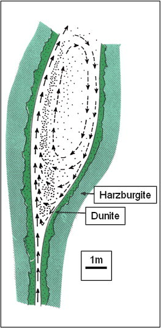
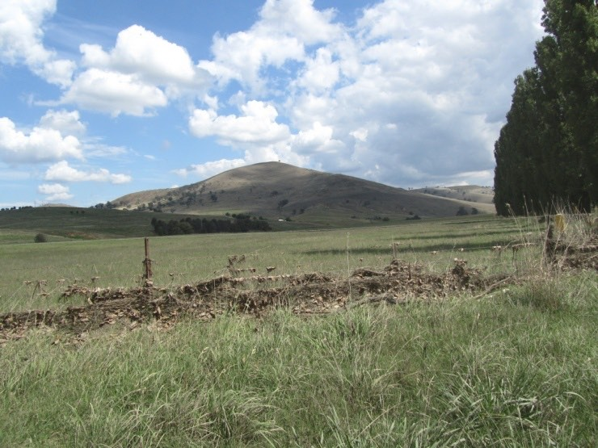
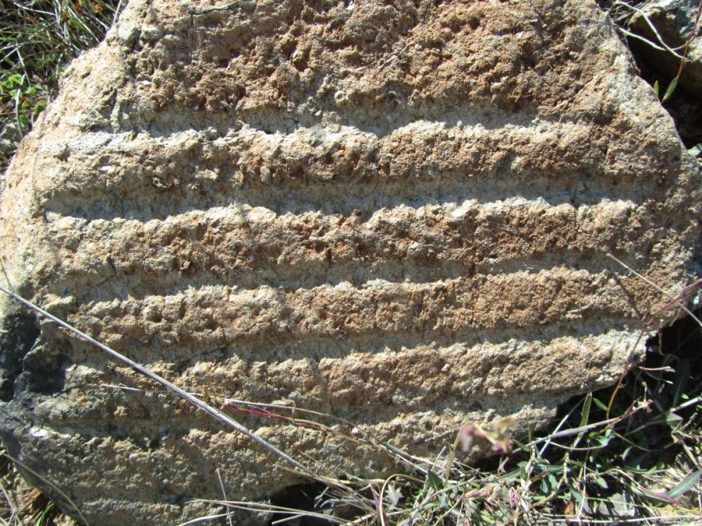
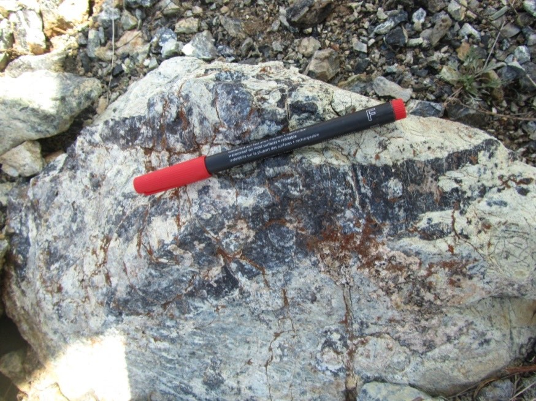
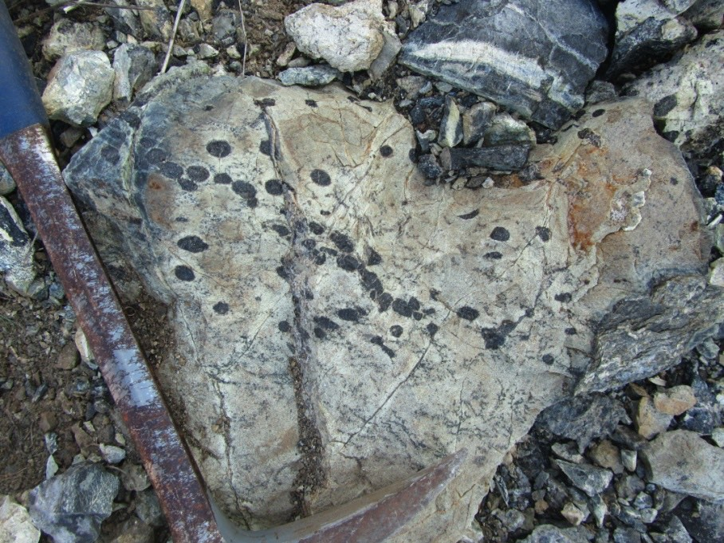
Name the chromite texture in D, and what C and B show.
Show the reasoning
D is nodular chromitite: rounded chromite nodules in pale dunite, typical of podiform deposits. C is a vein-like segregation of chromitite. B is primary layering in the host harzburgite, alternating olivine-rich and orthopyroxene-rich layers that weather out as ribs. A is the landscape of the serpentinite belt.
- Coolac is a magmatic ore suite: massive chromitite, disseminated chromite in serpentinised dunite, and chromitite breccia (Quilters specimens).
- Chromite in reflected light: brownish grey, low reflectance, isotropic, curved conchoidal fractures, usually with olivine (Lecture 4).
Phosphorus: Khibiny
Primary phosphorus deposits occur high in the sequence of large layered intrusions, and in large, highly alkaline, reduced syenite intrusions. The ore mineral is apatite, in distinctive lenses of magmatic origin. The chemistry around it is exotic: Na-rich pyroxenes and amphiboles, Ti-Zr silicates, REE carbonates, Nb oxides, even K sulphides and very soluble fluorides such as red villiaumite (NaF). Rare earths are important by-products. slide 41 lecture recording, 29 Sep
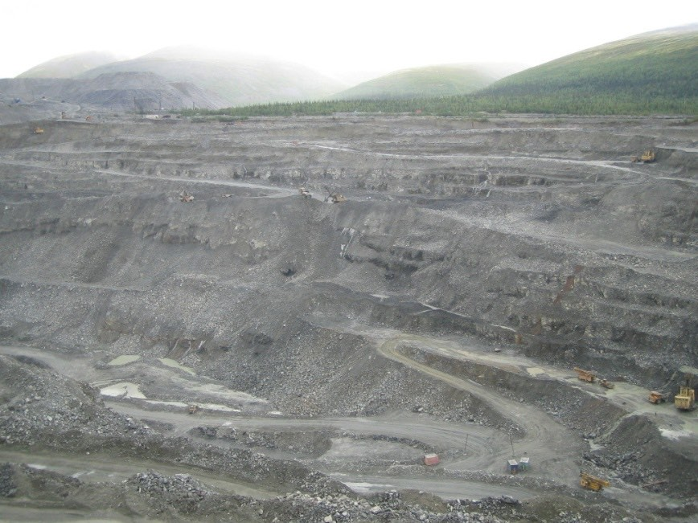
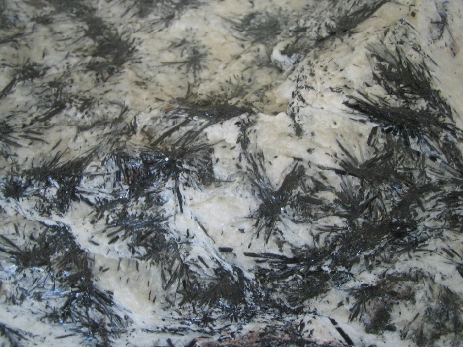
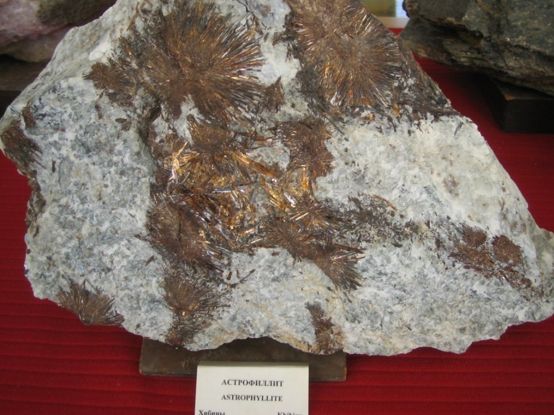
A is an apatite mine. Why would the rocks of B and C tell you this is an alkaline intrusion?
Show the reasoning
Khibiny is a circular, highly alkaline intrusion, rich in sodium, potassium, fluorine and CO₂. Its minerals show it: dark sprays of Na-rich pyroxene and amphibole (B) and golden astrophyllite (C), a Ti-bearing alkaline silicate. Ordinary gabbros and granites don’t carry these. The open cut (A) mines apatite, with rare earths as a by-product.
Nickel laterites
Laterites now account for most world nickel production and about 70% of nickel resources: Indonesia, the Philippines, New Caledonia, Cuba and Australia, with potential in PNG and across Southeast Asia. The source rocks are ultramafic, mostly serpentinised olivine-rich rock in ophiolites or komatiites, with about 0.2 to 0.4% Ni substituting for Mg in olivine. Intense tropical weathering, present or past, leaches out the magnesium and silica and concentrates the nickel. They were known in the 1950s; only newer processing made them pay. Which process works depends on where the Ni and Co sit: garnierite ore is smelted; clay ore uses pressure acid leaching (PAL), with acid consumption issues; limonitic ore uses a hydrometallurgical ammonia leach. slides 44 and 45 lecture recording, 29 Sep
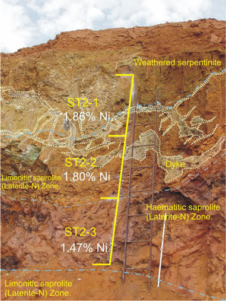
The face is weathered serpentinite with grades of 1.47 to 1.88% Ni. What was this rock before weathering, and why is it now ore?
Show the reasoning
It was an ultramafic rock, serpentinised peridotite or dunite, carrying only about 0.2 to 0.4% Ni in its olivine. Intense weathering stripped out the magnesium and silica and left the nickel behind, concentrated several times over, sorbed onto fine goethite and in clays. No sulphide was ever involved.
Dig a laterite profile0 / 6 zones
Tap the profile to sample each zone, from top to bottom.
Profiles reach about 100 m. Mature profiles form in drier climates such as Western Australia; immature ones in humid climates such as central Africa. Rejuvenation that lowers the water table lets nickel be enriched further. Deposits are classed by the main Ni carrier: garnierite (talc-like Ni silicate: higher Ni, low Co), smectite clays (low to moderate Ni), or oxide (goethite: low Ni, high Co). slides 47, 48 and 50 lecture recording, 29 Sep
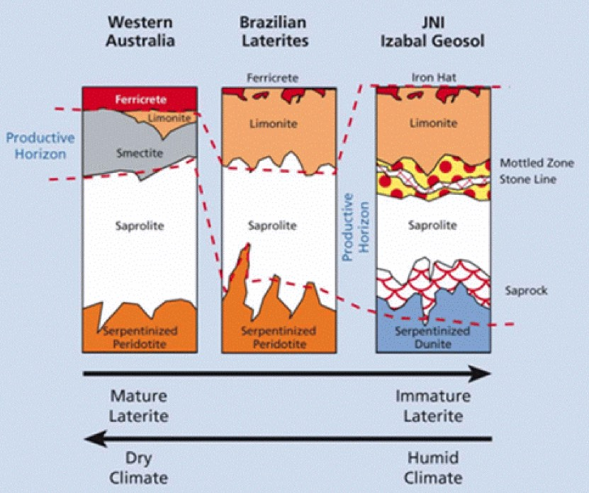
- Laterites: most world Ni production, about 70% of resources; source rock 0.2 to 0.4% Ni in olivine.
- Saprolite has the highest Ni; the limonite zone the highest Co.
- Garnierite (smelting), clay (PAL), limonite (ammonia leach).
Self-test
Answer out loud or on paper before you open each one. Claim the ounces if you got it.
Glossary and flashcards
Terms this lecture assumes or defines quickly. The dotted words in the text open them in place.
Flashcards
Where this goes next
Lecture 9 turns to sediment-hosted SEDEX deposits and Lecture 10 to VMS, the ancient relatives of the vents in Lecture 6. The laterite profile here is the same weathering story as Lecture 2, aimed at nickel instead of copper.